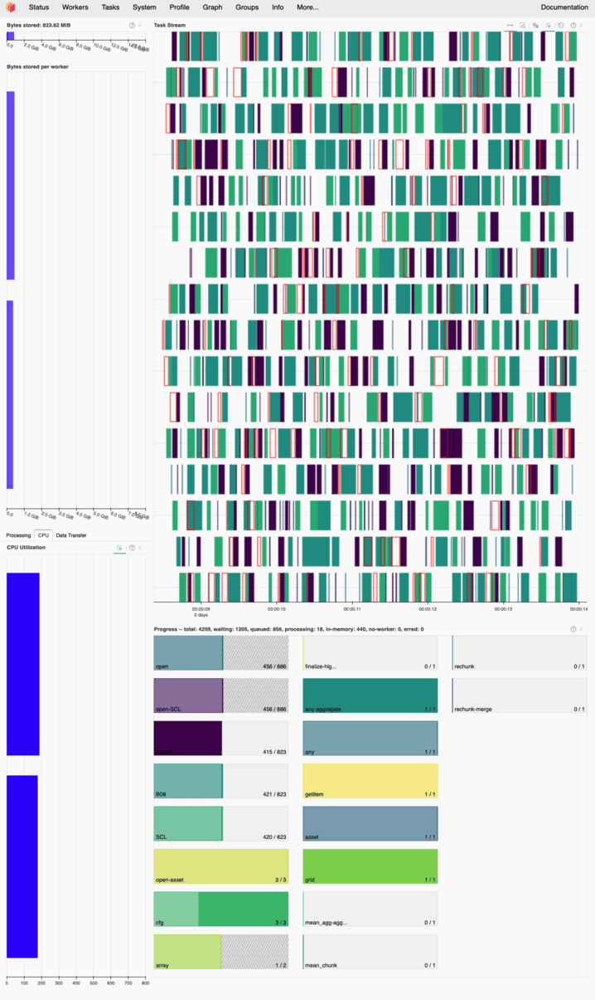

…use the Dask Dashboard to monitor computations?#
With the power to access large amounts of data and run complex computations on our HPC cluster, it’s important to wield that power responsibly. To help you do so — and ensure your tasks run efficiently — the Dask Dashboard lets you monitor your computations in real time. You can access the dashboard by following these steps:
First, you can import the dask_client as done in the following cell at the beginning of your notebook:
from sdc import dask_client
dask_client
[INFO] Trying to allocate requested resources on the cluster (timeout after 5 minutes)...
No recent SLURM jobs found for dask-workers
[INFO] Cluster is ready for computation! :) Dask dashboard available via 'localhost:8806'
Client
Client-b43bc688-b33c-11f0-9325-a4bf0187f99a
| Connection method: Cluster object | Cluster type: dask_jobqueue.SLURMCluster |
| Dashboard: http://172.18.10.2:8806/status |
Cluster Info
SLURMCluster
bc63c432
| Dashboard: http://172.18.10.2:8806/status | Workers: 8 |
| Total threads: 80 | Total memory: 80.00 GiB |
Scheduler Info
Scheduler
Scheduler-5c37f0a0-11ea-4d90-897d-3c5e82a16f45
| Comm: tcp://172.18.10.2:39483 | Workers: 0 |
| Dashboard: http://172.18.10.2:8806/status | Total threads: 0 |
| Started: Just now | Total memory: 0 B |
Workers
Worker: SLURMCluster-0-0
| Comm: tcp://172.18.1.16:42099 | Total threads: 10 |
| Dashboard: http://172.18.1.16:40613/status | Memory: 10.00 GiB |
| Nanny: tcp://172.18.1.16:36023 | |
| Local directory: /scratch/du23yow/dask-scratch-space/worker-jenz25o4 | |
Worker: SLURMCluster-0-1
| Comm: tcp://172.18.1.16:36359 | Total threads: 10 |
| Dashboard: http://172.18.1.16:44129/status | Memory: 10.00 GiB |
| Nanny: tcp://172.18.1.16:40751 | |
| Local directory: /scratch/du23yow/dask-scratch-space/worker-h5fbr702 | |
Worker: SLURMCluster-0-2
| Comm: tcp://172.18.1.16:39469 | Total threads: 10 |
| Dashboard: http://172.18.1.16:34035/status | Memory: 10.00 GiB |
| Nanny: tcp://172.18.1.16:42437 | |
| Local directory: /scratch/du23yow/dask-scratch-space/worker-5gfdaa57 | |
Worker: SLURMCluster-0-3
| Comm: tcp://172.18.1.16:37579 | Total threads: 10 |
| Dashboard: http://172.18.1.16:35969/status | Memory: 10.00 GiB |
| Nanny: tcp://172.18.1.16:38417 | |
| Local directory: /scratch/du23yow/dask-scratch-space/worker-ly2rwki5 | |
Worker: SLURMCluster-0-4
| Comm: tcp://172.18.1.16:43089 | Total threads: 10 |
| Dashboard: http://172.18.1.16:32977/status | Memory: 10.00 GiB |
| Nanny: tcp://172.18.1.16:34907 | |
| Local directory: /scratch/du23yow/dask-scratch-space/worker-vtpxm010 | |
Worker: SLURMCluster-0-5
| Comm: tcp://172.18.1.16:44769 | Total threads: 10 |
| Dashboard: http://172.18.1.16:38467/status | Memory: 10.00 GiB |
| Nanny: tcp://172.18.1.16:37893 | |
| Local directory: /scratch/du23yow/dask-scratch-space/worker-uhqoj0_i | |
Worker: SLURMCluster-0-6
| Comm: tcp://172.18.1.16:37931 | Total threads: 10 |
| Dashboard: http://172.18.1.16:38941/status | Memory: 10.00 GiB |
| Nanny: tcp://172.18.1.16:40059 | |
| Local directory: /scratch/du23yow/dask-scratch-space/worker-pifjuhh0 | |
Worker: SLURMCluster-0-7
| Comm: tcp://172.18.1.16:36985 | Total threads: 10 |
| Dashboard: http://172.18.1.16:40659/status | Memory: 10.00 GiB |
| Nanny: tcp://172.18.1.16:44819 | |
| Local directory: /scratch/du23yow/dask-scratch-space/worker-zz6rfwoh | |
As you can see, the dask_client provides a link to the dashboard and a button to “Launch dashboard in JupyterLab”. Both options will not do anything because we first need to set up port forwarding from our local machine to the remote HPC cluster. The key here is the port number shown in the link: 8806 in this example (it will be different for you!). This port number is essential for setting up the port forwarding, which basically creates a secure tunnel from your local machine to the remote server and allows you to access the dashboard in your local web browser.
Setting up port forwarding in VS Code is quite straightforward. You can follow these steps:
Open the Command Palette in VS Code by pressing
Ctrl+Shift+P(orCmd+Shift+Pon Mac).Type “Port”, select the “Forward a Port” option and click on the “Forward a Port” button.
Enter the port number you obtained from the
dask_client(e.g.,8806) and press Enter. It should automatically fill in the “Forwarded Address” field withlocalhost:<port_number>.
That’s it! After setting up the port forwarding, you can access the Dask Dashboard by opening your web browser and navigating to http://localhost:8806 (replace 8806 with the port number you were assigned to). You should now see the Dask Dashboard, which provides various visualizations and metrics about your Dask computations, such as task progress, memory usage, and worker status.
For more information on how to interpret the dashboard and use it effectively, you can refer to the Dask documentation on the dashboard.
In the following image, you can see an example of how the Dask Dashboard looks like while running a computation. To point out a few key features/observations:
On the left side, you have an overview of the “workers” that are executing your tasks and how much memory and CPU resources they are using. In this example, there are 2 workers and both of them are not fully utilized, which is a good sign. By looking at the “Bytes stored per worker”-panel and its x-axis, you can see that each worker is using only a fraction of its available 8 GB memory.
IMPORTANT: If you don’t see any bars in this panel, it means that you don’t have any active workers! This could be due to the workers not being started properly in the first place or all of them having died without any new workers taking their place. In such cases, you should restart your notebook kernel (“Restart”-button in the top panel of your notebook) and re-run the cells that set up the Dask client and of the computations you want to execute. Otherwise you might end up running your computations on the Login-nodes of the HPC cluster, which is not allowed!
In the center, you have a “task stream” panel that shows the progress of your tasks over time. Each worker can utilize multiple threads (CPU cores) to execute tasks concurrently. In this example, each worker has 8 threads so in total we can see 16 horizontal lanes representing the threads of both workers. The colored bars represent the tasks being executed, and you can see that tasks are being processed in parallel across all available threads with minimal idle time (white spaces between the bars)… again, a good sign for efficient resource usage!
Below the task stream, you have a “progress” panel that shows the overall progress of your computation split into multiple subtasks. While the tasks are being executed, you can see the progress bars filling up, indicating how much of each task has been completed. In this example the progress bars are filling up smoothly, which corresponds to the efficient execution of tasks shown in the task stream above. If you notice that tasks are taking a long time to complete or if there are significant delays between tasks, it may indicate that your computation is not optimized and could benefit from further tuning or adjustments (e.g., changing chunk sizes, optimizing algorithms, etc.).
